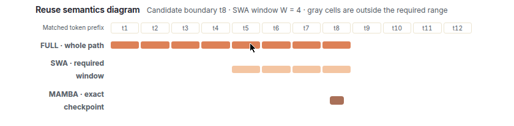
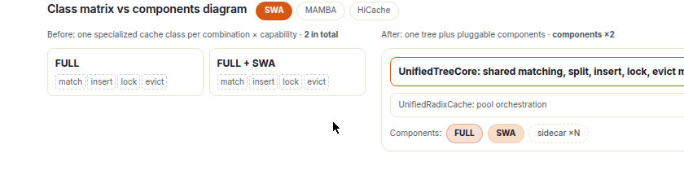
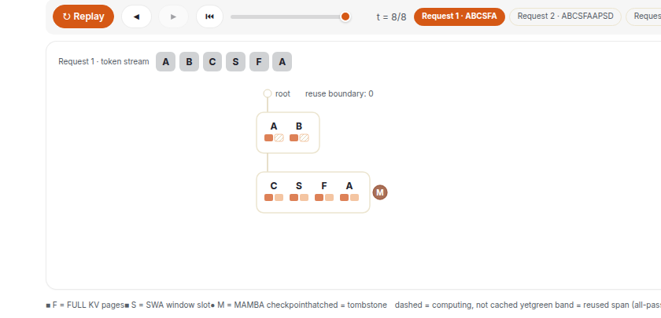
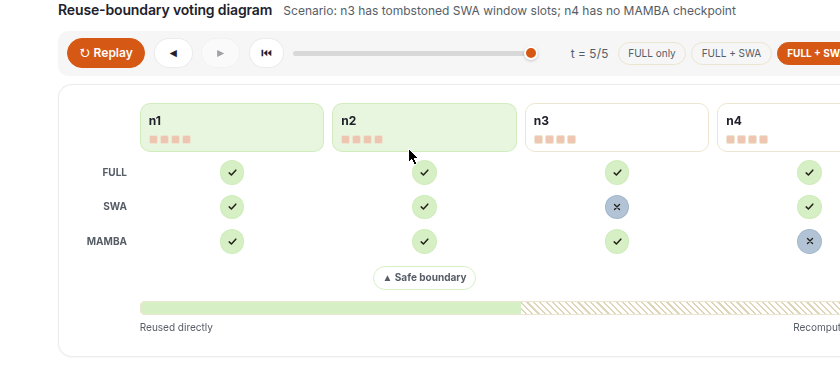
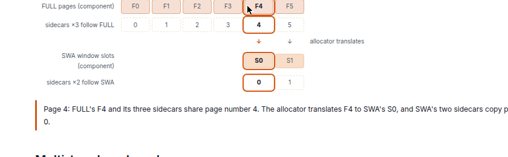
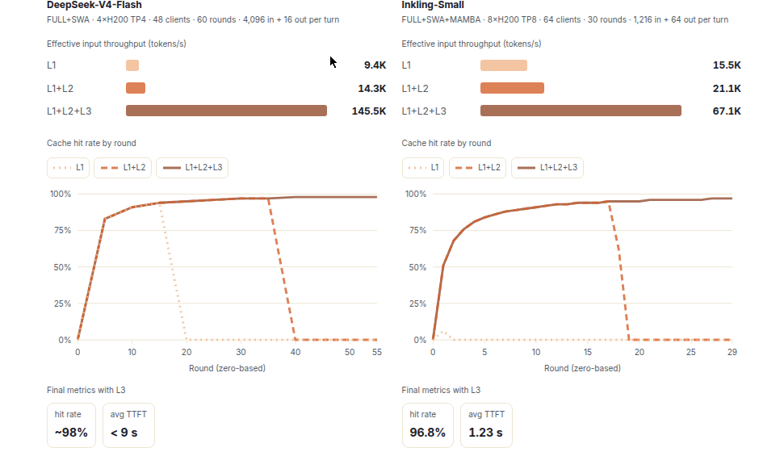
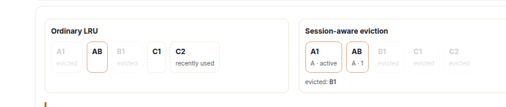
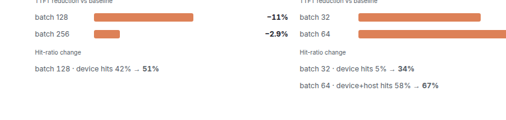
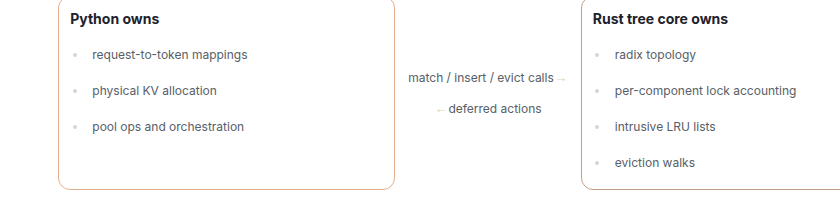
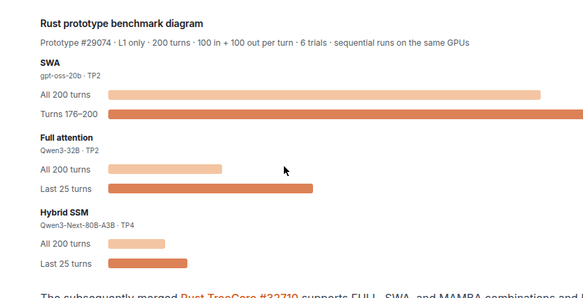

前缀缓存的思路很直白：请求共享一段token前缀，后到的请求直接复用算好的KV，只算新增的token。但混合模型把事情搞复杂了：全注意力要整段前缀的KV，滑动窗口注意力只要复用边界前一小段连续窗口，Mamba则要边界处循环状态的一个快照。
SGLang的统一RadixCache把这三种复用语义塞进一棵树：一个节点存一段token和每个组件一个槽位，各组件自己管分裂、插入、加锁和淘汰。下面把设计、跨层缓存、会话感知淘汰和Rust树核心逐一拆开。
前缀缓存复用的是请求之间共享的token前缀。在全注意力下，后到的请求可以直接复用缓存的前缀，只计算新增token。混合模型组合了三种数据，各有不同的复用规则：FULL需要匹配前缀全程的KV，SWA需要复用边界紧前方一段连续窗口，MAMBA需要在边界处取循环状态的一个快照，也就是检查点。
DeepSeek-V4把FULL和SWA配对，Kimi-K3把FULL和MAMBA配对（KDA循环状态），Inkling则三种全用。SGLang用一棵共享树处理这些组合，每个组件定义自己的复用规则。

以前每种组合配一个专用缓存类，FULL一种、FULL+SWA一种，能力一多就爆炸。现在是一棵统一树加可插拔组件：UnifiedTreeCore管共享的匹配、分裂、插入、加锁、淘汰机制，UnifiedRadixCache做池编排，FULL、SWA、MAMBA等组件各管一摊，sidecar可按需挂N个。

每个基数树节点存一段token，外加每个组件一个槽位。FULL和SWA槽位存KV页索引，MAMBA槽位存前缀端点处的检查点。SWA在所需窗口之外的数据可以留着，也可以独立淘汰，淘汰后留下一个空槽位，叫墓碑。
各组件自己处理分裂、插入、加锁和淘汰。回收节点的部分SWA数据时，先在保留边界处把节点分裂；MAMBA检查点留在它原来的前缀端点，复用它的请求通过写时复制拿到私有拷贝，再继续更新状态。

匹配时沿着匹配路径走，每个组件在每个候选边界检查自己的数据，每个候选独立评估。计算从所有组件都接受的最深边界恢复。比如n3的SWA窗口槽位已成墓碑、n4没有MAMBA检查点，投票后安全边界就停在各组件都点头的最深处，之后的部分重算。

HiCache把统一RadixCache扩展到GPU L1、主机内存L2和外部存储L3三层。DeepSeek-V4的FULL和SWA用各自独立的页索引，由分配器映射。压缩KV、索引器缓冲、压缩器状态等辅助池作为sidecar：它们共享所属组件的索引和传输，三个跟FULL，两个跟SWA。
归一化的六页例子里，Page 4上FULL的F4和它的三个sidecar共享页号4，分配器把F4翻译成SWA的S0，SWA的两个sidecar复制页号0。

多轮对话不断拉长可复用前缀。对比纯L1、L1+L2、再加500GiB Mooncake L3三档：DeepSeek-V4-Flash在4×H200、TP4、48客户端、60轮、每轮输入4096输出16的配置下，加L3后有效输入吞吐145.5K token/s，纯L1只有9.4K，平均TTFT不到9秒，后期轮次命中率约98%。
Inkling-Small是FULL+SWA+MAMBA三种全上，在8×H200、TP8、64客户端、30轮、每轮输入1216输出64下，L3档67.1K token/s，纯L1档15.5K，命中率96.8%，平均TTFT 1.23秒。有效输入吞吐按总完整提示长度除以墙钟时间算，命中缓存的前缀token计入分子。

应用用稳定的session_id标识同一会话的请求，SGLang跟踪该会话对缓存条目的引用。调用/close_session移除它的引用，被多会话共享的前缀保留其他会话的引用。
FULL对未加锁、可淘汰的条目按引用情况、引用计数排序，再走基础淘汰策略，通常先回收无引用的数据。会话保留作用于L1/L2，L3的淘汰由存储后端管。

SWE-bench上，同时开统一RadixCache和会话感知淘汰，相对HiRadixCache加LRU基线，DeepSeek-V4-Pro的TTFT最多降11.0%，Qwen3.5-397B-A17B最多降16.6%。batch 128下DeepSeek-V4-Pro降11%，设备命中率从42%提到51%；Qwen3.5-397B-A17B在batch 64下降16.6%，设备加主机命中率从58%提到67%。

SGLang把树遍历、锁记账、LRU更新搬到Rust做，降低调度器上的CPU开销。Python管物理KV分配和缓存编排，把Rust返回的操作应用到各个池。分工明确：Python拥有请求到token的映射、物理KV分配、池操作与编排；Rust树核心拥有基数拓扑、每组件锁记账、侵入式LRU链表和淘汰遍历。调用是match/insert/evict过去，deferred actions回来。

只跑L1的Rust原型在200轮对话基准里，相对Python树把SWA的TTFT降了38%，全注意力降10%，混合SSM降5%。后继合入的Rust TreeCore支持FULL、SWA、MAMBA组合和HiCache，会话感知缓存继续用Python树核心。

参考：https://www.sglang.io/blog/unified-radix-cache